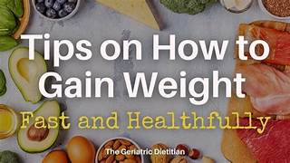
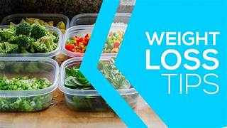

Weight Gain Tips

In today’s world, where so many people are battling being overweight, it may seem odd that someone would purposefully want to gain weight.
But the fact is that being underweight can be as damaging as being overweight. People need a certain amount of fat in the body in order for
their body to work correctly and being underweight can lead to brittle bones, a weakened immune system, anemia, fertility issues and hair loss.
Whether you’re underweight due to genetics, your lifestyle or an illness, there are things you can do to add back some of those pounds in a
healthy manner. In the end, your body should be semi-lean and toned with a healthy glow.
How to Put on Weight
- Mentally Prepare Yourself: You must be ready for dietary and lifestyle changes.
- Set your Goal: Aim for no more than 0.5kg per week using the slow and steady method.
- Plan your Meals: Stick to a proper meal schedule long-term.
- Stay away from junk foods: Avoid unhealthy snacks, cakes, and crisps.
- Understand your body: Some people are naturally skinnier due to genetics.
- Sleep well: Good sleep reduces stress and supports healthy weight gain.
- Track your calories and exercise: Monitor intake vs. expenditure.
- Treat yourself: Celebrate small achievements along your journey.
- Seek treatment: Consult a doctor if severely underweight.
- Reduce cardio: Focus more on strength training.
- Lift heavier weights: Fewer reps with heavier weights build muscle.
- Don’t go to the gym every day: Rest between workouts.
- Take a little walk before eating: Stimulates appetite without excess calorie burn.
- Eat 200–300 more calories daily: Small increases help you gain steadily.
- Drink a glass of red wine before eating: Can help stimulate appetite.
- Add extra protein: Boosts calories and helps muscle growth.
- Add good healthy carbs: Include rice, potatoes, and pasta.
- Eat regular meals: Never skip meals — three per day is essential.
- Snack between meals: Choose nutrient-dense mini-meals like nuts or granola.
- Drink your calories: Smoothies and shakes add nutrition and calories.
- Add whey protein: Mix into milk, juice, or tea.
- Drink water after eating: Avoid drinking too close to meals.
- Never skip breakfast: Make it the biggest meal of your day.
- Nut butters are a must: Peanut, almond, or walnut butters add protein and calories.
- Add fatty fish: Salmon, tuna, sardines, and trout provide healthy fats.
Weight Loss Tips

It seems that you can’t look at any magazine, television program or read through any website without seeing some advertisement or story about how to lose weight.
And unfortunately, we are being inundated with information about weight loss due to the rising obesity rates and numbers of people struggling to lose or control their weight.
25 Weight Loss Tips
Despite the media attention and all the information that’s available, people simply aren’t losing weight.
But there are some very good reasons for this: too much misinformation, fad diets, quick fixes, or lack of commitment.
Yet for those who stay consistent, the end result is always worth it.
You will be healthier and your body will work more efficiently if you choose nutritious, high-quality foods and effective, high-impact exercises.
Here are some steps to help you out:
- Keep your eyes on the prize: Visualize your goals daily.
- Have realistic goals: Slow and steady wins the race.
- Write down what you eat: Be specific about your food log.
- Be persistent: Don’t let slip-ups derail your journey.
- Tell your friends and family: Build accountability and support.
- Make it a lifestyle: Avoid temporary diets.
- Reward yourself: Use non-food rewards like movies or spa time.
- Don’t mind the scale: Muscle may increase weight at first.
- Drink more water: 2.5 litres daily to avoid mistaking thirst for hunger.
- Add fibre: Helps you feel full longer.
- Ditch the soda: Replace with sparkling water or kefir.
- Pack your lunch: Avoid vending machines and restaurants.
- Choose half portions: Restaurant servings are oversized.
- Snack smart: Pick almonds, apples, or chia pudding.
- Use the apple rule: If not hungry enough for an apple, you’re not truly hungry.
- Buy smaller plates: Control portions naturally.
- Eat healthy fats: Olive oil, coconut oil, walnut oil.
- Eat your veggies: Fill 50–75% of your plate with vegetables.
- Drink green tea: Boosts metabolism and energy.
- Double the protein: Helps burn fat and build lean muscle.
- Start with breakfast: Prevents overeating later.
- Cut down alcohol: Avoid empty calories from drinks.
- Balance meals: Always include protein, grains, and vegetables.
- Never skip meals: Skipping leads to bad food choices.
- Add cardio exercises: Running, cycling, hiking, or sports burn calories effectively.